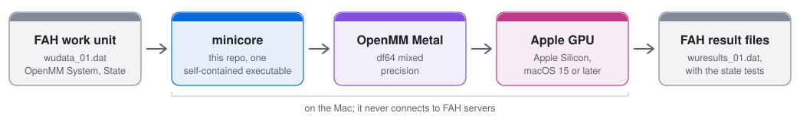

Folding@home for Apple Silicon Mac GPUs
People have asked for Folding@home on Apple GPUs since 2019 (openmm#2489) and 2024 (fah-client-bastet#303). Here it is. minicore runs Folding@home's own OpenMM work units end to end on the Mac's GPU, through OpenMM's Metal platform, and folds them to the standard of Folding@home's own core.

![Checked against FAH's core 0x27. 21 of 21 state tests passed on a whole real FAH unit (P18264, 919,221 atoms, 5 ns), as FAH's core 0x27 passed 21. Six files in the result, in core 0x27's order; viewerTop.json, xtcAtoms.csv.bz2 and checkpointIntegrator.xml byte-identical to core 0x27's. 101 of 101 core-parity checks passed, and 65 of 65 failure and stop-resume cases. 0.054 kJ/mol/nm worst state-test force RMSE, beside CUDA's 0.052, against FAHBench's limit of 5. 16 s to fold the bundled test unit on an M3 Ultra after ./build.sh](figures/cards-dark.svg)
The five checks as text
| Checked against FAH's core 0x27 | |
|---|---|
| 21 of 21 | state tests passed on a whole real FAH unit (P18264, 919,221 atoms, 5 ns), as FAH's core 0x27 passed 21 |
| Six files | in the result, in core 0x27's order; viewerTop.json, xtcAtoms.csv.bz2 and checkpointIntegrator.xml byte-identical to core 0x27's |
| 101 of 101 | core-parity checks passed, and 65 of 65 failure and stop-resume cases |
| 0.054 | worst state-test force RMSE in kJ/mol/nm, beside CUDA's 0.052, against FAHBench's limit of 5 |
| 16 s | to fold the bundled test unit on an M3 Ultra after ./build.sh, so you can check it yourself (Try it) |
Accuracy


Parity with Folding@home's core

Every behaviour FAH's client acts on matches core 0x27. The rest needs FAH's own signing keys or is a format the client never reads. PARITY.md lists every row.
Speed
Same card, like for like
On one NVIDIA RTX 5060 Ti, minicore built for CUDA against FAH's core 0x27, over the same first 11% of P18264:
| Core | OpenMM | Per 1% |
|---|---|---|
| FAH's core 0x27 | 8.2.0 | 187 s |
| minicore, CUDA | 8.2.0 | 184 s |
| minicore, CUDA | 8.6.1 | 180 s |

On a 5,000-step cut on that card, minicore's viewerTop.json and xtcAtoms.csv.bz2 were byte-identical to FAH's core's. Run conditions are in EVIDENCE.md.
On Apple Silicon
The M3 Ultra folded the whole unit in 5.06 h, 182 s per 1%. Run conditions are in EVIDENCE.md.
FAQ
Is it as accurate as Folding@home's core?
Yes. It passed all 21 of the unit's state tests, as FAH's core did, and its errors sit with CUDA's. Its energy drift in NVE is -0.0010 ± 0.0007 kJ/mol/ps over 10 runs, -8.1e-6 kT per ns per degree of freedom. CUDA's is -0.0001 ± 0.0011, and 10 runs each don't tell the two apart (Welch t -0.68, p 0.51).
That takes patch 0005. Upstream OpenMM wraps molecules back into the box by the double precision box,
which the kernels never use (they see it rounded to float), so each reorder changes every pair length
across that face, measured at +0.002 kJ/mol per reorder; patch 0005 wraps by the float box instead.
Without it, upstream 9e320c6c3 drifts -0.0050 ± 0.0009 over 10 runs (Welch t -3.50 against CUDA). I
found the cause in lab lane pin-drift-bisect (lab commit cdf10b66) and measured the 10 runs with the
patch in lane pin-drift-confirm (lab commit 26a0344c, raw energies in
pin-drift-confirm/results/drift/s1..s10).
EVIDENCE.md
has the tables.
Can Folding@home use the Apple Silicon GPU?
Yes. minicore runs Folding@home's real work units on M1 and later GPUs.
Can I run Folding at home on my Mac's GPU?
Not through the official client yet: it folds on the Mac's CPU only. fah-core-metal is the GPU core that would change that, and you can test it on your Mac today with ./report.sh.
How fast is it?
On one RTX 5060 Ti, minicore built for CUDA took 184 s per 1% of P18264's first 11% on OpenMM 8.2.0 and 180 s on 8.6.1, where FAH's core 0x27 took 187 s on the same card. On Apple Silicon, the M3 Ultra folded the whole unit in 5.06 h.
Can I fold for Folding@home points with it today?
No. FAH signs its cores and their results with its own private key, so that step is FAH's.
The source, how to build and run it, and the evidence for each number are in the repository: the README and docs/EVIDENCE.md. Packaging it for FAH's client on macOS is in docs/PACKAGING.md.
Ran it on your Mac? Post your result, whether it passed or not.